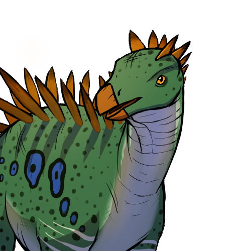
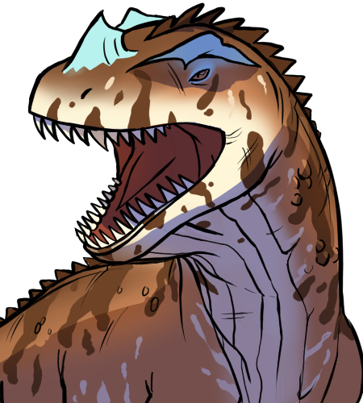
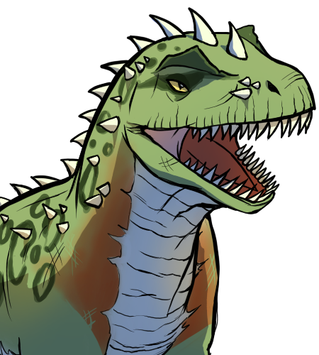

Qual é o nome da Praia aonde foram encontrados os primeiros 100 ovos?
Quantas vertebras tem o Miragaia longicollum?

O Lusognathus almadrava é um Dinosssauro?

Qual era a dieta dos répteis marinhos Belemnites e Amonites, gigantes?
Qual destes é o réptil marinho mais proximo de um Golfinho?
Em que outro continente foi encontrado o Ceratossauros dentisulcatus?

Porquê a maioria dos dinossauos engoliam pedras?
